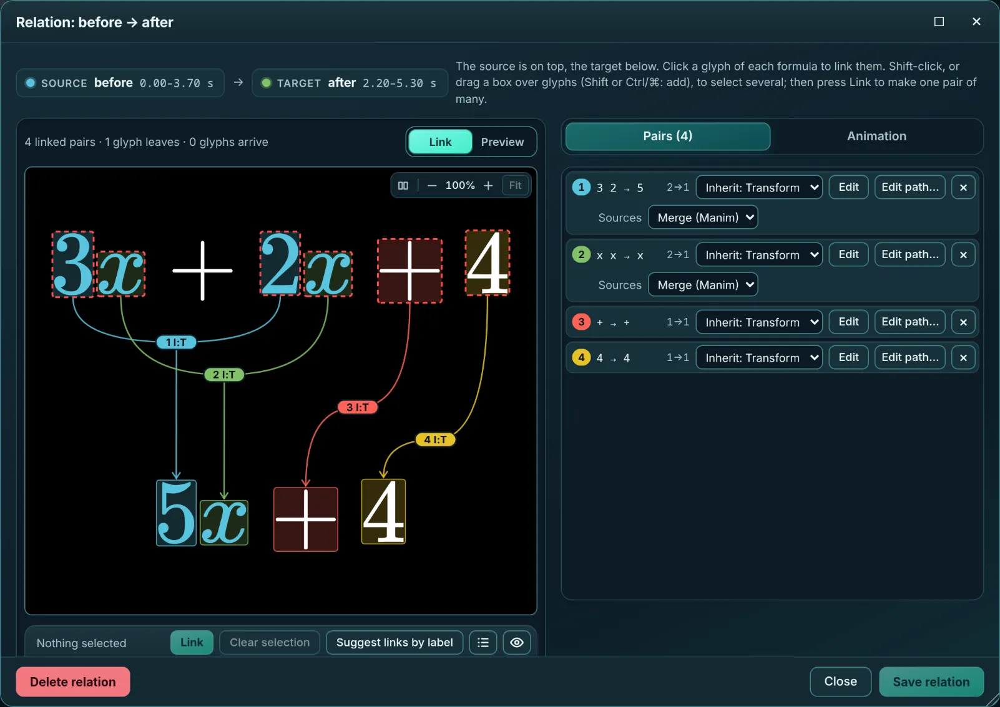
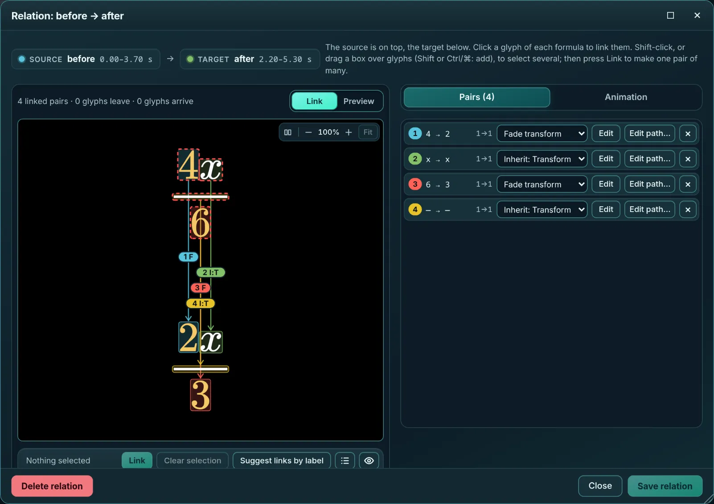

Transformation recipes
Eight common moves of algebra, each one a small project you can play, open and change. A recipe says which pairs to link, which of them the app finds by itself, which you add by hand, and what to choose for the style and the timing.
How to read a recipe
Every recipe is a relation between two formulas on two tracks: the first formula writes itself in during a second, holds for 1.2 s, then turns into the second one during a window of 1.5 s, and the second holds for 1.6 s. Download a project, choose File ▸ Open…, press Other file… and pick the file (Projects explains the dialog). Then select the first clip and press Edit… on the relation in the Relations tab: the pairs are the ones in the table.
The recipes follow the way you would make them in the relation editor. You press Suggest links by label, which links glyphs with the same label, in reading order, then fix what it cannot know:
- glyphs that change their label, such as a
−that becomes a+; - a label that appears twice, where the first match is not the one you mean;
- glyphs that split in two or merge into one.
The tables say which is which: Suggest for a link the app proposes, and by hand for one you add or change. A glyph that no pair names leaves with the outro of the first clip, or arrives with the intro of the second.
The recipes at a glance
| Recipe | What it shows |
|---|---|
| Moving a term | A pair added by hand so that a sign changes on the way; a Path arc so that glyphs pass each other. |
| Cancelling a factor | Unpaired glyphs, which leave with the outro of the first clip. |
| Expanding a square | One-to-many pairs: a glyph that splits in two. |
| Combining like terms | Many-to-one pairs and their arrival modes. |
| Simplifying a fraction | A style for one pair: Fade transform. |
| Substituting a value | The Copy style: the source stays on screen. |
| Swapping the two sides | Every pair found by Suggest; the arc does the rest. |
| Factoring out a common factor | Splitting a glyph in two, a label that changes, and glyphs that enter with the intro. |
Moving a term to the other side
2x − 4 = 6 becomes 2x = 6 + 4. The 4 crosses the equals sign and its
minus turns into a plus on the way.
| Pair | Made by |
|---|---|
2 → 2, x → x, = → =, 6 → 6, 4 → 4 | Suggest: five one-to-one links. |
− → + | By hand. The labels differ, so Suggest leaves both glyphs out. Linking them makes the sign travel with its 4 and change shape. |
Make these pairs yourself. Press Suggest links by label and
Accept all, then click the − of the top formula and the
+ of the bottom one and press Link. Preview
plays the transformation with your pairs.
Style and timing. Every pair has the relation's default style, Transform: the
glyphs move and the old ones are gone. The relation has a Path arc of −45°: the 4 and
its sign, which go right, swing over the top, while the = and the 6, which go left,
pass under them. With no arc the 4 would run through the 6.
Custom paths says which way each sign swings.
Project and Python
Cancelling a factor
(x + 1)(x − 2) over x + 1 becomes x − 2. The factor that is on top and
underneath goes; what is left settles into the middle.
| Pair | Made by |
|---|---|
x → x, − → −, 2 → 2, from the factor that stays | Suggest finds the three labels, but it links the first x of the source, which is inside the factor that cancels. Delete that link and link the x of the second factor. |
| The cancelled factor, the brackets of the other one, the denominator and the bar | No pair. They leave with the outro of the first clip. |
Style and timing. The survivors use Transform. What is not paired fades with the outro of the first clip, a FadeOut as long as the window: in the relation editor, the Animation tab lists those glyphs and lets you choose the animation and its length (Outro). The cancelled glyphs are coloured red in the formula, a colour that stays with each glyph, so the viewer sees what is leaving before it leaves.
Project and Python
Expanding a square
(a + b)² becomes a² + 2ab + b². Each letter splits in two, the exponent is shared between
the squares, and the brackets go.
| Pair | Made by |
|---|---|
a → a, a · b → b, b · + → +, + · 2 → 2, 2 | By hand: one-to-many pairs. Suggest proposes one-to-one links to the first match of each label. Select the source glyph and both targets, then press Link. |
| The two brackets | No pair: they leave with the outro of the first clip. |
The 2 of 2ab | No pair: it arrives with the intro of the second clip, a FadeIn as long as the window. |
Style and timing. With Transform a source glyph that has two targets
splits: Manim pads the smaller group with copies of its glyph, so one glyph becomes two. Choose
Copy (source stays) for the relation and the original (a + b)² stays on
screen while the terms grow from it. The letters are coloured so you can follow each one.
Project and Python
Combining like terms
3x + 2x + 4 becomes 5x + 4. The two numbers merge into one, and the two x land on a single
one.
| Pair | Made by |
|---|---|
3, 2 → 5 | By hand: many-to-one. Select both numbers above and the 5 below, then press Link. |
x, x → x | Suggest links the first x; link the second one onto the same target to add it to the pair: two glyphs become one. |
second + → +, 4 → 4 | Suggest links the first plus to the one below, but the plus between the like terms is the one that goes. Delete that link and link the second plus instead. |
The first + | No pair: it leaves with the outro of the first clip. |

Style and timing. A pair of several sources and one target has an arrival mode, chosen in the Sources menu under it: Separate sends every source to the target, Merge (Manim) lets the extra sources fade into it as Manim does, and Copies lets one source transform while the others send copies and stay. The two pairs here merge. How relations work compares the three.
Project and Python
Simplifying a fraction
4x over 6 becomes 2x over 3. The numbers are halved in place.
| Pair | Made by |
|---|---|
x → x, bar → bar | Suggest. |
4 → 2, 6 → 3 | By hand: different labels. In the list of pairs, choose Fade transform in the style menu of each of the two rows. |

Style and timing. A pair can have a style of its own. Transform bends the outline of the 4 into the outline of the 2, which looks like a blur halfway for two digits that stand still. Fade transform fades one numeral into the other, which reads better. The glyphs that do not change keep the relation's Transform.
Project and Python
Substituting a value
x² + 3x with x = 2 becomes 2² + 3 · 2. The original stays; a copy of each x flies down and
turns into a 2.
| Pair | Made by |
|---|---|
x → 2 (the base), x → 2 (the last glyph) | By hand: the labels differ. |
exponent 2 → 2 | Suggest pairs the source's 2 with the first 2 of the target, which is the base. Delete that link and link the exponent to the exponent. |
+ → +, 3 → 3 | Suggest. |
The · | No pair: it arrives with the intro of the second clip. |
Style and timing. The relation's default style is Copy (source stays): every pair sends a
copy and the original remains. So the first clip does not leave: it is placed above the second and
lasts as long as the scene, with no outro. Each x and the 2 it becomes are amber (a colour
belongs to a glyph of its formula), so the colour holds all the way.
Project and Python
Swapping the two sides
y = x + 2 becomes x + 2 = y. The two sides trade places.
| Pair | Made by |
|---|---|
all five: y → y, = → =, x → x, + → +, 2 → 2 | Suggest finds every one. |
Style and timing. The pairs are the five that Suggest finds; the movement is the point. On straight paths the
y and the other side would run through each other. A Path arc of 60° makes every
glyph swing to the right of its own direction: the y and the =, which go right, pass
below, and x + 2, which goes left, passes above. If you want one glyph to take a different
route, draw its path.
Project and Python
Factoring out a common factor
6x + 9 becomes 3(2x + 3). The 6 splits into a 3 and a 2, the 9 turns into a 3, and brackets appear.
| Pair | Made by |
|---|---|
x → x, + → + | Suggest. |
6 → 3, 2 | By hand: one-to-many. Select the 6 and the two targets, then press Link. |
9 → 3 | By hand: the labels differ. |
| The two brackets | No pair: they arrive with the intro of the second clip. |
Style and timing. Transform again; the 6 splits like the letters of the square. The intro of the second clip brings the brackets in at the same time as the window, so they appear as the numbers land.
Project and Python
Making your own
Start from the recipe that is closest to your equation. Open its project, change the LaTeX of its two formulas in the Creator, then open the relation with Edit… and check its pairs: use Suggest links by label for what stays the same, and fix the rest by hand as above. Link the labels that differ, point a glyph that repeats at the right match, and let glyphs that split or merge share a pair. When one formula should grow into several rows instead, use Morph blocks.
Where to go next
- Animation blocks covers every animation block a clip can hold, from Write to FocusOn.
- The relation editor covers linking glyphs, the pair list and the styles of pairs.
- Custom paths makes glyphs travel along an arc, or along a path you draw in the Preview.